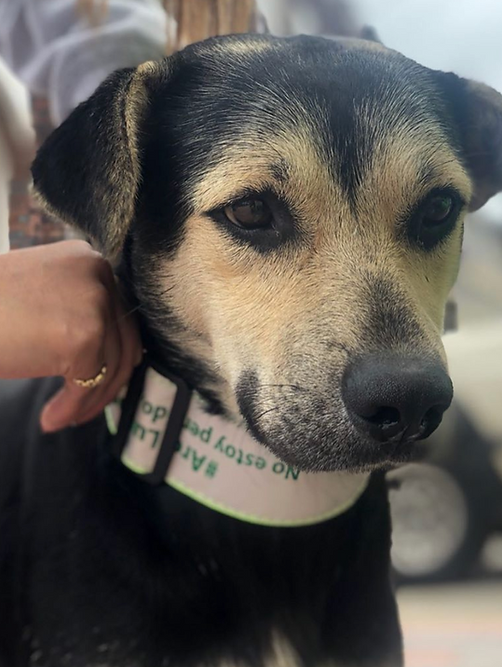

¿Tienes un peludito en adopción?
- Fotos claras y recientes, con buena luz
- Edad aproximada, tamaño y raza (si se conoce)
- Estado de salud: vacunas y esterilización
- Temperamento y con quién convive bien
- Ciudad/localidad y datos de contacto
Difusión de casos
Si tienes un perrito o gatito que está en adopción, perdido o lo encontraste extraviado, te ayudamos publicándolo en @adoptalos — una de las plataformas de difusión más grandes de Colombia para encontrar adoptantes, animales perdidos y encontrados.

Tres tipos de caso
Diligencia la información y envía las fotos del peludito a difusionesarca@gmail.com. Mientras más completos los datos, más rápido encontramos una solución.
Cómo funciona
Nuestro equipo revisa cada solicitud y la comparte con la red de @adoptalos, que llega a miles de personas en toda Colombia.
Reúne la información de tu caso según la categoría: adopción, perdido o encontrado.
Envía las fotos del peludito y los datos al correo difusionesarca@gmail.com.
Publicamos tu caso en @adoptalos para que llegue a la mayor cantidad de personas posible.
Ayudanos a encontrarle un hogar